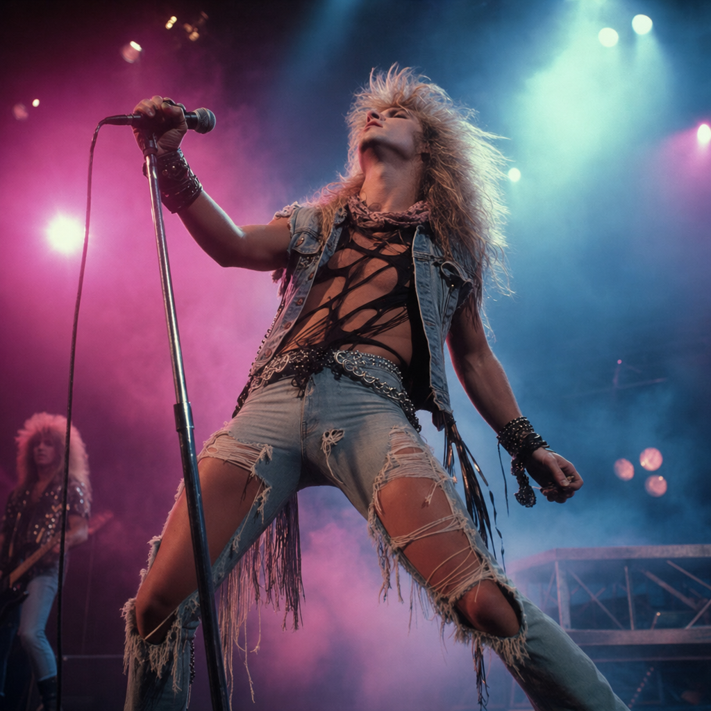

Vocal register and the Hot 100
Pop's average voice barely moved. The voice that wins the chart did.
In 2019, the male-led top-10 of the Billboard Hot 100 averaged a Pandora vocal-register score of 7.60. The rest of the year's male-led charting songs — songs that made the Hot 100 but not the Hot 10 — averaged 5.95. The gap is 1.65 register points, more than double anything in the previous 60 years.
That 7.60 is not just a recent peak. It is the highest top-10 register year in the entire 1958-2019 series. The previous record was 1988 — Bon Jovi, Poison, Whitney Houston-era hair metal — and even 1988 only reached 7.21.
The all-songs picture tells a completely different story. There, 2019 sits at 5.95 — below 1958, half a point below the early-1990s plateau, and 1.13 points below 1990's all-time high of 7.08. The shift is not in pop's average. It is in pop's ceiling.
Yearly mean Pandora register among top-10 male-led Billboard Hot 100 hits, 1958-2019. The 2019 point sits at 7.60 — half a point above the previous record, set in 1988.
The 1-to-10 score comes from Pandora's Music Genome Project, where human musicologists spend twenty to thirty minutes listening to each song and rate roughly 450 attributes. One of those attributes is vocal register: how high the lead voice sounds, on a 1-to-10 ordinal axis.
On the low end, a 2 sounds like Isaac Hayes growling under "Theme From Shaft" or War's spoken-low "Low Rider". On the high end, a 10 is what Ginuwine's "Pony" gets — a near-the-ceiling delivery that became the scale's textbook anchor. In between sit 11,944 male-led Hot 100 songs spanning sixty years.
The score does not separate falsetto from belt. A high register reading means the voice sounds high; the technique behind it — a chest-voice belt, a head-voice push, a falsetto leap — is collapsed into one number. That is the cost of having sixty consistent years of data and the reason the dataset can talk about pop's sound but not its mechanism.
Across all 11,944 songs the modal register is 7 (27.7% of the dataset). Registers 5, 6, and 7 together cover almost 70% of male-led pop history. Register 10 — the very top — is only 1.3% of the dataset. Most male pop sits in the comfortable upper-middle of a tenor's range.
Distribution of register scores across all 11,944 male-led Hot 100 songs, 1958-2019. Bar color encodes register height; the modal value is 7.
Ginuwine's "Pony" (1996) — the textbook 10/10 Pandora register. Listen for the falsetto verse against the synth-bass riff.
When you average every charting male-led song instead of just the top 10, the 1980s win on every count. 1990 averages 7.08 — the highest single-year value in the entire series — followed by 1987 (7.0802), 1988 (7.0782), and 1989 (7.04). Twelve consecutive years between 1979 and 1991 sit at 6.86 or higher. No other stretch comes close.
The same pattern shows up in song shares. From 1979 through 1991 the proportion of charting male-led songs with register 8 or higher sat in a 31-40% band every year, peaking at 40.2% in 1988. In 2017 it dropped to 5.8% — the lowest in the dataset. In 2019 it was 16.2%.
By decade, the all-songs average climbs from 5.77 in the 1950s, rises through the 1960s and 1970s, peaks in the 1980s at 6.92, drifts back down through the 1990s and 2000s, and lands at 6.06 in the 2010s — essentially flat with the 1960s. This is the U-shape pop critics keep arguing about. It is real, it ends in the 1980s, and 2019 does not break it.

Share of charting male-led songs with register ≥ 8, by year. The shaded band marks 1979-1991, twelve consecutive years above 31%.
Bee Gees' "Stayin' Alive" (1977) — four weeks at #1, anchor of the dataset's late-1970s falsetto plateau.
Five male-led songs hit the Billboard top 10 in 2019. Four of them — Sucker (register 9), If I Can't Have You (9), Talk (7), No Guidance (8) — are sung high. Only one, Ed Sheeran and Justin Bieber's I Don't Care, sits in the middle of the scale at register 5. The mean of those five songs is 7.60.
What is unusual is not that high-register hits exist. They have always existed. What is unusual is that in 2019, almost every male-led top-10 hit fits that pattern at the same time, while the rest of the chart does not. The 1.65-point gap between top-10 and all-songs in 2019 is more than double the next-largest gap (0.78 in 2015) and a full inversion of 1995, the only year on record where the top-10 average sat below the all-songs average.
The shape of the trend is also different from the 1980s peak. Hair-metal high registers were stratospheric — Cinderella's "Don't Know What You Got" got 9s, Bon Jovi's "Livin' on a Prayer" sits at 8. In 2019 there are zero register-10 male-led songs in the dataset. The modern top of the chart leans on registers 7, 8, and 9 — very high, but not the screaming top. The pop ceiling has lowered slightly even as the floor has dropped through it.
Top-10 minus all-songs register, by year. 2019's 1.65-point gap is more than double anything before it.
Khalid's "Talk" (2019) — register 7, peaked #3, ranked #8 on Billboard's 2019 year-end Hot 100.
The reason the 2019 all-songs mean is so low is sitting right inside the 248 charting Hot 100 songs from that year. 108 of them — 44% — were tagged Rap/Hip hop, with a mean register of 4.45. Another 86 songs in the dataset score zero on Pandora's "spoken" axis (fully sung) and average 6.31 in register; the 66 songs that score 8-10 (rapped) average 4.14. The 2010s' male charting voice was often a low-register rapped delivery. That is what holds the average at 5.95.
In fact, 2017 — peak streaming-era mumble rap — was the lowest-register year in the entire dataset, at 5.7226 on the all-songs series. The decade's floor was as historically low as the chart ceiling was historically high. They were happening at the same time and on the same chart.
One useful baseline. In 2019, female-led Hot 100 songs averaged register 6.51 — roughly a point and a half above male-led songs (5.12). The 2019 male top-10 mean of 7.60 sits a full point above even that female baseline. At the very top of the chart, a year of male singing crossed over the year's average female register.
Two things were true about 2019 pop, and they sat in opposite places. Below the top-10, men sang lower than at any point since the late 1950s. At the top-10, men sang higher than at any point in the chart's history. There has never been a 1.65-point gap before. There has never been a 7.6 top-10 average before.
The Vox Earworm video built on this dataset makes the audible case: the radio sound of the late 2010s — the soft, bedroom-pop, post-Drake, post-Weeknd register — has a falsetto on it more often than not. The numbers say something narrower and stranger. A high voice is not what defines 2010s pop. A high voice is what defines 2010s hits.
The chart in 2019 was not telling men to sing higher. It was telling them: if you want to win, sing higher. Most of them did not. Five did, and four of those five had to.
Vox Earworm: "We measured pop music's falsetto obsession" — the companion video, with opera singer Anthony Roth Costanzo demonstrating the difference between falsetto and chest-voice register. Watch on YouTube →